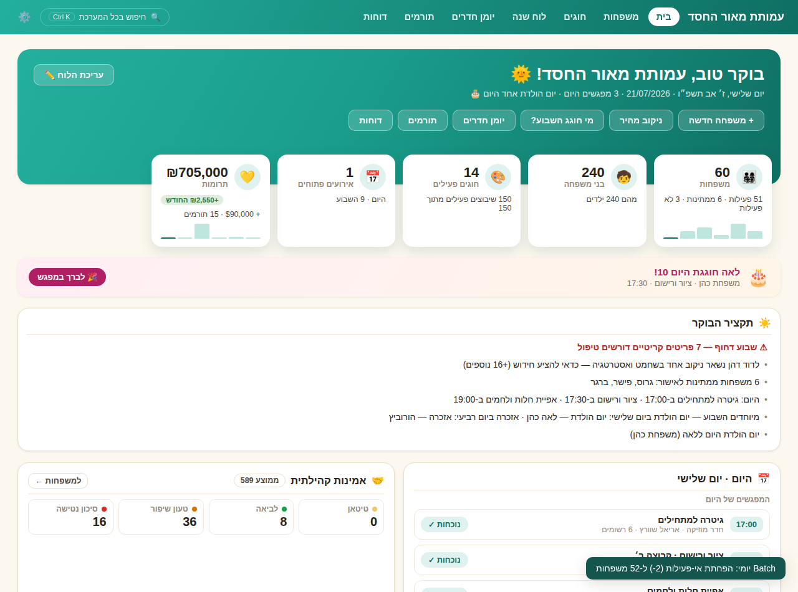
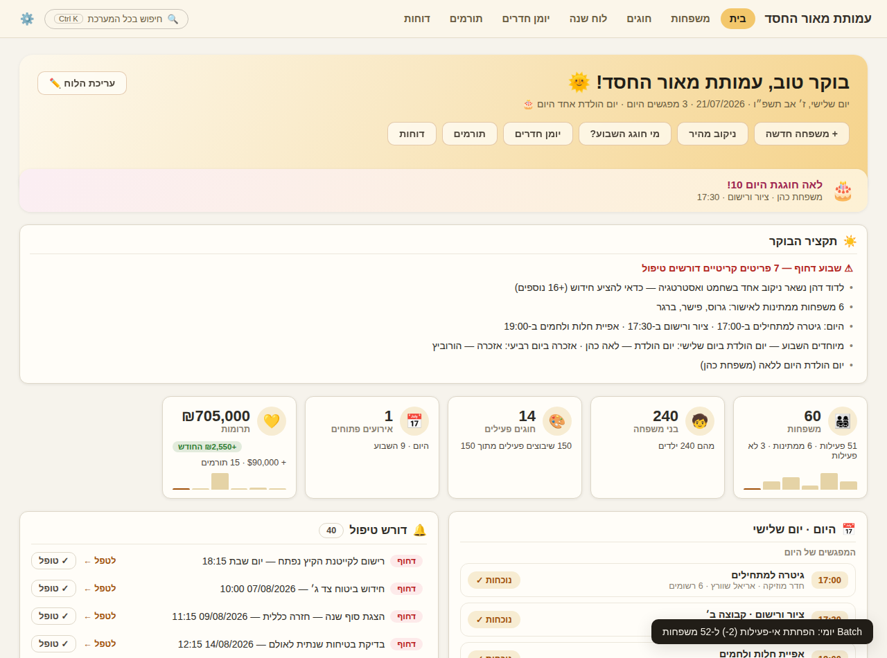

🖼️ צילומי המסך — כל ערכה היא מערכת אחרת
העמוד הזה הוא גלריה פנימית להשוואה מול ההדמיות. האתר החי: כניסה למערכת ←
⬜ צֹהַר — סרגל צד, שורת פיקוד, טבלת "היום במערכת"

🟤 היכל — גאלה: תפריט זהב צף, פס נתונים, ספר הזהב והלוח העברי

🟢 קהילה — פס טורקיז עם כרטיסים שקועים וכפתור "לברך במפגש"

🟡 אור ראשון — הקלאסית

📱 צֹהַר בטלפון (390px)